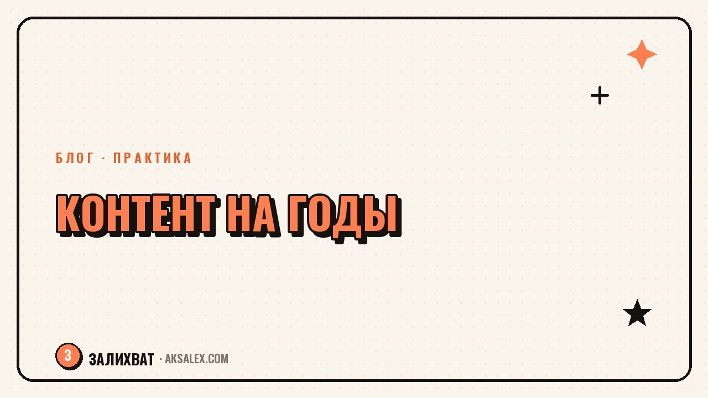

Вечнозелёный контент для блога: статьи на годы

Большая часть контента в блоге живёт сутки: вышел пост, собрал охваты, на следующий день про него забыли и ты, и подписчики. Но есть другой тип материалов - вечнозелёный контент, который продолжает приносить просмотры и новых подписчиков через месяцы и даже годы после публикации. Разберём, что именно делает контент вечнозелёным, какие темы для этого подходят и как нейросети помогают быстрее собрать такие материалы без потери качества.
Что отличает вечнозелёный контент от новостного
Вечнозелёный контент отвечает на вопрос, который люди задают постоянно, а не только сегодня. "Как выбрать нишу для блога" будут искать и через год, а "какие тренды в Reels сейчас" устареет через пару месяцев. Разница не в качестве текста, а в самой теме: одна привязана к моменту, другая - к постоянной проблеме читателя.
Второй признак - такой материал не требует актуальных цифр или названий сервисов, которые быстро меняются. Если статья держится на конкретных ценах или версиях приложений, она устаревает вместе с ними. Если в основе - принцип или способ действия, она остаётся рабочей куда дольше.
Темы, которые обычно работают годами
- Пошаговые разборы "как начать" в любой нише - с блогом, нейросетями, своим делом
- Разбор частых ошибок новичков - проблема повторяется у новых людей постоянно
- Ответы на вопросы "что выбрать между А и Б" без привязки к конкретной акции или версии
Как найти вечнозелёные темы в своей нише
Самый простой способ - пересмотреть вопросы, которые тебе задают в комментариях и директе за последние несколько месяцев. Если один и тот же вопрос всплывает у разных людей с разницей в недели - это сигнал, что тема не привязана к моменту, а описывает постоянную проблему твоей аудитории.
Я три года веду блог про выпечку и заметила: пост про актуальный тренд собирает всплеск за два дня и исчезает из статистики. А статья "почему тесто не поднимается", которую я написала давно, до сих пор приводит новых читателей каждую неделю - люди гуглят это постоянно, независимо от сезона.
Хорошо помогает и обратный вопрос: что ты сама искала, когда только начинала заниматься своим делом или темой блога. Эти базовые вопросы новичков почти никогда не теряют актуальность, потому что новые новички появляются непрерывно.
Как написать такой материал, чтобы он не устарел быстро
Главное правило - отделять принцип от деталей, которые часто меняются. Можно написать "как выбрать нейросеть под задачу" через критерии (цена, язык, скорость ответа), а не через список конкретных названий - тогда статья останется полезной, даже когда появятся новые сервисы.
Второе правило - глубина важнее скорости. Вечнозелёный материал почти всегда длиннее и подробнее новостного поста, потому что должен закрыть вопрос читателя полностью, без необходимости искать дополнение в другом месте. Именно поэтому такие статьи реже появляются спонтанно - они требуют структуры и разбора по шагам.
Чек-лист перед публикацией
- В тексте нет жёсткой привязки к датам, акциям или версиям сервисов
- Статья отвечает на вопрос полностью, а не отсылает "смотри другие мои посты"
- Заголовок сформулирован так, как человек реально вводит запрос в поиск
- Структура с подзаголовками позволяет найти нужный кусок без чтения всего текста
Нейросети как помощник в сборке вечнозелёного материала
Нейросеть не придумает за тебя тему, которая будет нужна людям через год, - это знание рождается из опыта общения с твоей аудиторией. Но она хорошо помогает на этапе сборки: структурировать разбор по шагам, проверить, не упущен ли логичный раздел темы, собрать черновик таблицы сравнения вариантов.
Полезный сценарий - попросить нейросеть посмотреть на черновик статьи и указать места, где текст слишком завязан на текущий момент: конкретные цены, названия версий приложений, модные словечки. Такие места стоит переписать через общий принцип, чтобы статья не устарела через полгода.
- Набросай нейросети список вопросов читателей, которые повторяются - попроси сгруппировать их по темам
- Попроси структуру статьи по шагам под выбранную тему, а дальше дополни её своим опытом
- Отдельно проверь текст на фразы, которые устареют быстро, и замени их на принципы
Сравнение: вечнозелёный и ситуативный контент
Оба типа контента нужны блогу, но у них разные задачи, и важно не путать их между собой при планировании.
| Параметр | Вечнозелёный контент | Ситуативный контент |
|---|---|---|
| Срок жизни | Месяцы и годы | Несколько дней |
| Задача | Стабильный трафик из поиска и рекомендаций | Быстрый всплеск охватов здесь и сейчас |
| Темы | Базовые вопросы и принципы ниши | Новости, тренды, инфоповоды |
| Объём подготовки | Требует структуры и разбора по шагам | Можно сделать быстро и спонтанно |
| Где лучше работает | Блог, поиск, статьи на сайте | Соцсети, Reels, Stories |
Частые вопросы
Что такое вечнозелёный контент простыми словами?
Это материалы, которые отвечают на вопросы, которые читатели задают постоянно, а не только в момент публикации. Такая статья продолжает приводить новых читателей через поиск месяцами и годами после выхода.
Как найти вечнозелёные темы для своего блога?
Пересмотри вопросы, которые тебе задают в комментариях и личных сообщениях за последние месяцы - повторяющиеся вопросы почти всегда указывают на постоянную проблему аудитории. Второй способ - вспомнить, что ты сама искала, когда только начинала заниматься своей темой.
Сколько должна быть статья, чтобы считаться вечнозелёной?
Жёсткого числа символов нет, но такой материал обычно длиннее и подробнее обычного поста, потому что должен закрыть вопрос читателя полностью. Короткая заметка редко набирает достаточную глубину, чтобы оставаться полезной надолго.
Может ли нейросеть сама придумать вечнозелёную тему для блога?
Нейросеть помогает структурировать и проверить тему, но знание о том, какая проблема реально волнует твою аудиторию годами, приходит из личного опыта общения с читателями. Используй её как помощника в сборке, а не как источник идей с нуля.
Нужно ли обновлять вечнозелёные статьи со временем?
Да, раз в несколько месяцев стоит проверять такие статьи на устаревшие детали - названия сервисов, цены, скриншоты. Сама суть темы остаётся актуальной дольше, но мелкие детали всё равно требуют периодической сверки.
Раз тема оказалась полезной, вот что почитать следующим. Разбираем страх, что идея своего дела устарела: как отличить реальный сигнал от тревоги и что делать, если похожие варианты уже есть на рынке.
Читать статью →а не вручную